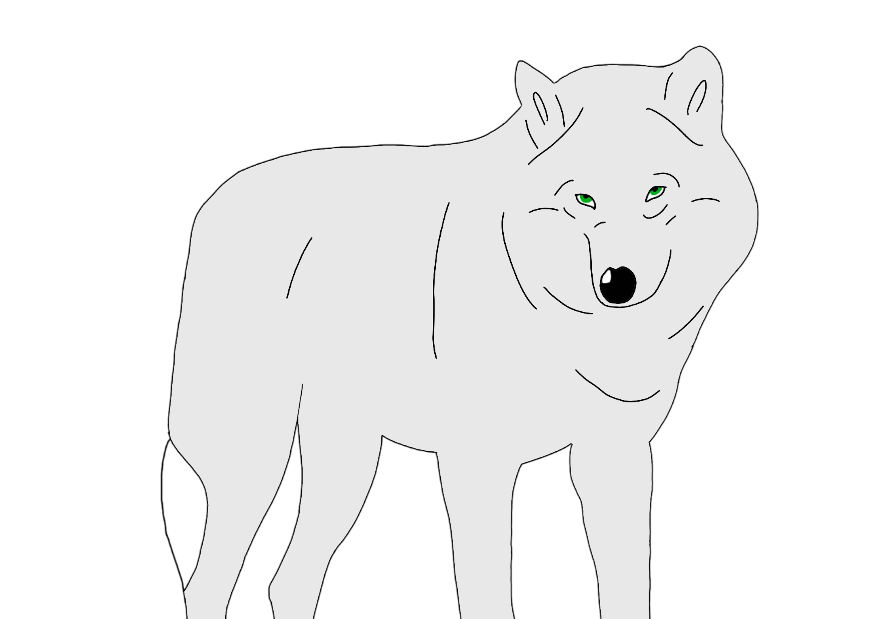

Nicotine-stained yellow light shone through the gaps in the
branches above me. The trees were withered and
disintegrated, their leaves turned slowly crisp and
gradually ran out of moisture until they fell to the dirt
floor; stripping the tree — all the trees —
beyond bare, leaving them more naked than could be imagined
mere months ago.
I search among my companions, colourful are their bodies and
their bright beaks mask almost perfectly their intense distress.
It is autumn, so winter is coming, and our tiny homes
provide little protection from cold and wet weather.
Erl-King will do you grievous harm.
He sits on a log only feet from my cage, stewing fungi and
roots and leaves and weeds. He has unnaturally green eyes
and knotted brown hair, waist-length and sprinkled with
twigs and crackled yellow leaves that cling to him like
remora to a whale; like another layer of lies blinding the
unsuspecting to who, what he truly is.
On this occasion, it’s a young girl who’s found
Erl-King’s home; she sips a cup of nettle tea
and listens to him talk.
I say she’s less than twenty years old, but
Linny disagrees. She has emerald eyes like Erl-King and
thick, heavy eyebrows that reach farther over the arc of her
eye-line than common.
Linny next-door says she’s here to save us. She can
see in her eyes that she’s just as strange a beast as
Erl-King; and in the way she looks at us birds that she
knows what she’s getting into.
But no, you think this about every newcomer here. You said
the very same thing about the girl who brought the jar of
marmalade and the boy who Erl-King scouted from the forest.
Not everyone’s here to save us, Linny, that’s
just wishful thinking.
I do wonder exactly what she is doing here, though.
I mean, she’s been coming every day for weeks and
neither of the two have made any sort of romantic advance.
Normally, Erl-King hooks up with his victims the first time
they visit, but this one hasn’t gone so far as to give
him a hug.
They talk about hunting and gathering, where the best
chickweed plants are in the forest; they share food and tea
and laugh laugh through the afternoon. But why? Is this girl
so lonely that he, with his gruff voice and sickening smile,
is her only company? Has she not seen the oddities in Erl-King’s
appearance? Or — oh, please, let me shut this thought
out! — are they one and the same?
All the birds remember how our master looked without his
clothes on — it’s kind of how we all came to be
here. The truth is — and I don’t know how to put
this nicely — he’s green. Head to toe,
roots to split ends; when he washes the moss and dirt from
his body in the river — taking off his innermost layer
of clothing — his skin, hair, and eyes are a
disturbing chlorophyll shade which does not seem at all
natural.
This young woman does not seem to share Erl-King’s
skin colour, which one must say is promising. She looks
more, well, human. But the more I think about it the more
skeptical I am, because I used to look human, too! As did
every damned bird in this prison of an enclosure! Just the
same, when Erl-King gets his lichen in the right spots
around his eyes, positions an exact number of leaves neatly
in his hair, and wears his leafy toga,
he looks human too.
One day, after about four weeks of strange and awkward
visits, it happened. Not the way Linny, or I for that
matter, thought it would happen, but it happened.
It was finally winter, freezing cold. The rain on the forest
floor was a symphony of low-frequency instruments, with
intricate dynamics and crescendos of percussion and wind.
The storm told a wicked story of manipulation, destruction,
and ferocity.
The new victim had just been around. She hadn’t
stopped coming when the wind blew down a tree only metres
from Erl-King’s spot, nor when the forest floor was
covered in snow, so she was here today. When she got up to
leave, Linny gave me a look that said ‘oh well, every
day’s a new opportunity’, and I gave her
one back that said ‘my false sense of hope is entirely
your responsibility’.
But I soon realised Linny wasn’t even looking at me,
but behind me, at the girl walking home.

I turned around to see what she was looking at, and was
instantly baffled. Firstly, she wasn’t walking home at
all, but instead standing just out of the Erl-King’s
sight, taking off her clothes. And then, once she had
removed every single human garment that she wore, her body
became cloaked in fur. Her face elongated, her eyes brightened,
her body shrunk, and — my! — she was the most
majestic creature I’ve ever seen!
Suddenly, she made perfect sense to me. I mean, such a beautiful
wolf made she, of course the human costume was difficult to wear! All the
awkwardness and strangeness of her person was absent in this
elegant creature before my eyes. Virtue flows from this
wolf’s every step, and her face was so perfectly geometric
it almost made me weep!
Erl-King, too, wept when he saw her. But not in the same way as I, he
cried and cried and begged her not to eat him alive. She did, which is
all the better because had she spared him, he wouldn’t have
been so generous in return.
Reflective commentary
Angela Carter’s The Bloody Chamber is a collection of adapted short stories published in 1979, in which fairy tales are reimagined with impressive morbidity and almost unwavering feminism. Themes in her stories include metamorphosis, sexual politics, violence, and death — a wide range of complicated dynamics which are expressed through surprising and often erotic versions of tales which she, as well as readers of the book, may have been interested in as children.
Among the reimagines fairy tales are Little Red Riding Hood, Beauty and the Beast, Puss in Boots, and, of course, the Erlking; which is not a single story but a recurrent figure who appears in European mythology and folklore. Traditionally the Erlking was an elf who murdered children in the woods. In The Erl-King (Carter’s representation), however, the Erl-King is another, more modern, type of predator; the type with whom women fall in love, upon which he takes advantage of them completely. Once he has successfully seduced them, he does what any sensible entity would do, and turns them into birds.
Carter’s version follows a young woman who almost falls prey to the Erl-King’s trap. She is never named, and the only notable characters in the story are her and the Erl-King. It’s set in autumn and in a forest, which is important since it retains this feature from the original stories written about the Erlking, including Johann Wolfgang von Goethe’s. The conflict in Carter’s story is when the protagonist realises the Erl-King’s plan, upon spotting a birdcage he weaves for her.
Interestingly, the story has no clear resolution – except that the protagonist makes the decision to kill the Erl-King. When I thought about this, I realised that the abrupt ending provided an opportunity for me to extend the scope of the story beyond The Bloody Chamber’s representation. Thus, the resolution of my response takes place in winter, and the saviour is a werewolf.
The last three stories in The Bloody Chamber are about werewolves, all of which are loosely based of Little Red Riding Hood (for obvious reasons). The entity works well with Carteresque writing, since the concept itself is simultaneously metamorphic, violent, sexual (since in all Carter’s werewolf stories the character must be fully naked to transform into a wolf), and frankly terrifying. For these reasons, I decided that it was a fitting addition to the story for both the aesthetic, and the plotline.
Nakedness is also a recurrent theme in The Erl-King as well as many other of the stories in the collection. The following quote example of this theme from the relevant story:
‘He strips me to my last nakedness, that underskin of mauve, pearlized satin, like a skinned rabbit; then dresses me again in an embrace so lucid and encompassing it might be made of water.’
Hence, similar comparisons and metaphors are sprinkled throughout my response, in attempt to illuminate Carter’s sexual exploration through her writing.
I had two goals for this story, besides to replicate Carter’s style as closely as possible. The first was to humanise the birds and represent them as relatable characters, since it’s known in the original story that they were once human, and it’s presumed that they will become so again. I attempted this by giving the protagonist a friend, Linny (who is meant to be a common linnet), who is an ‘optimistic self’, which is recognised by the main bird-character. Secondly, to create empathy in the reader with what I believe to be a realistic werewolf character, which was attempted by emphasising the ‘awkwardness and strangeness’ of her in human form.
Copyright disclaimer: The cover photo and the wolf drawing are original content, and every other image was sourced from the internet within the Terms and Conditions of the individual websites from which they originated. This story and the assets it includes are for educational and personal usage, and the creator is not profiting from the usage of other people’s intellectual property.